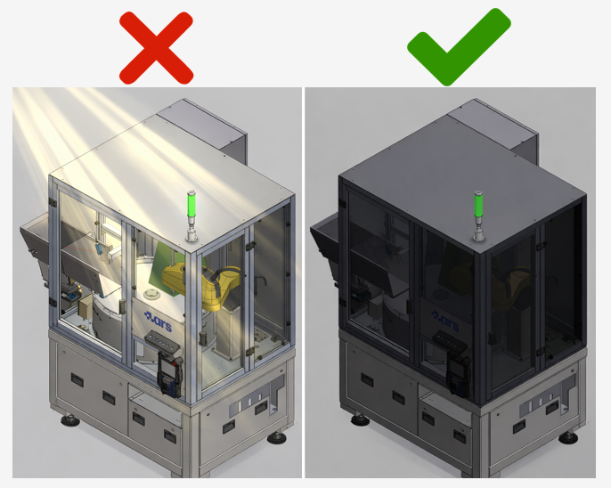

Mechanical System Installation#
This section describes the mounting and positioning requirements for the key components of the FlexiVision One vision system. Installation should only be carried out after the basic mechanical installation of the FlexiBowl® and hopper, if any, has been completed.
Warning
Mandatory prerequisites
Before proceeding with the installation of the vision components, ensure that:
The FlexiBowl® has been mounted and fixed to the bearing structure (robotic cell)
The hopper has been installed correctly
The support structure for camera and illuminator has been prepared
For installation of the FlexiBowl®, please refer to the Dedicated Manual provided.
Note
Required skills
Mechanical installation requires:
Basic skills in mechanical assembly
Use of measuring instruments (gauge, spirit level, tape measure)
Ability to read technical drawings
VisionController Assembly#
The VisionController (Industrial PC) manages image processing and communication with the robot.
Since it is a sensitive electronic component, it requires careful positioning to ensure adequate ventilation and protection from contaminants.
Technical specifications#

Screw Holes |
M5 |
|---|---|
Feature |
Value |
Width (total with brackets) |
245.00 mm |
Width (body) |
227.00 mm |
Connector panel width |
200.00 mm |
Height (total with brackets) |
123.00 mm |
Height (body) |
120.00 mm |
Depth |
61.10 mm |
Assembly requirements#
Requirement |
Specifications |
|---|---|
Recommended position |
Inside electric panel or on dedicated panel near the robotic cell |
Ventilation space |
Minimum 50 mm on all sides for air circulation |
Fixing |
35 mm DIN rail or M5 screws on panel |
Ambient temperature |
1°C ~ +50°C (check full specifications in section VisionController Specifications) |
Protection |
IP40 minimum (IP54 mounting in electric cabinet recommended) |
Installation procedure#
Assembly with Holes#
Phase |
Operational Description |
|---|---|
1. Support preparation |
Drill the holes according to the indications on the technical data sheet |
2. Unpacking |
Take the VisionController out of its packaging, taking care not to damage the connectors. Check the integrity of the product. |
3. Fixing |
Secure the VisionController with M5 screws |
Mounting with DIN rail#
Phase |
Operational Description |
|---|---|
1. Support preparation |
check that the rail is clean and securely fastened. |
2. Unpacking |
Take the VisionController out of its packaging, taking care not to damage the connectors. Check the integrity of the product. |
3. Fixing |
Hook the device by sliding it onto the rail until it clicks into place. |
Warning
Ventilation
The VisionController generates heat during operation. Always ensure at least 50 mm of clearance space around the device. Otherwise, there could be:
Overheating and automatic shutdown
Reduced performance
Damage to internal components
Mounting the Camera#
Precise positioning and alignment of the camera are critical steps that directly affect the calibration accuracy and performance of the picking system.
Ideal working distance#
The camera must be mounted so that the front face of the lens is positioned at a specific distance (Working Distance) from the working surface of the FlexiBowl®.
For a detailed calculation of the ideal distance for your application, please refer to the dedicated section: Ideal Distance Calculation

FlexiBowl® Model |
Recommended Working Distance |
Lens Included in Kit (Focal Length) |
|---|---|---|
FB 200 |
800 mm |
35 mm |
FB 350 |
1000 mm |
35 mm |
FB 500 |
1000 mm |
25 mm |
FB 650 |
1000 mm |
16 mm |
FB 800 |
1000 mm |
16 mm |
FB 1200 |
1300 mm |
12 mm |
Positioning and alignment#
The correct alignment of the camera is crucial to get quality images and ensure picking accuracy.
Incorrect configurations. The pictures show examples of incorrect positioning of the camera: the field of view (indicated in red) is off-centre in relation to the viewing area, covering only part of the working area or including areas outside the working area. These configurations compromise part identification and the operation of the vision system.


Correct configuration. The camera must be positioned centrally with respect to the viewing area of the FlexiBowl® (backlight zone). This way, the field of view (indicated in green) symmetrically covers the entire working area, ensuring the proper operation of the vision system.

Centring: |
|
Orthogonality: |
|
Tip
To facilitate fine-tuning and allow for future adjustments, it is strongly recommended to design the mechanical support of the camera with the possibility of making micro-adjustments:
Z-axis (height): -10 mm / +30 mm (for working distance adjustment)
X-axis (left-right): ±10 mm (for fine centring)
Y-axis (forward-backward): ±10 mm (for fine centring) This flexibility is especially useful during initial calibration and for any future recalibration.
Camera Dimensions#

CAM-CIC-5000-20G-1 camera dimensions (mm)#
Feature |
Value |
|---|---|
Width × Height (body) |
29 × 29 mm |
Depth (body) |
42.0 mm |
Total depth (including rear connector) |
48.9 mm |
Front projection (lens mount) |
12.60 mm |
Side fixing holes centre distance (M2) |
20.0 × 23.7 mm |
Front fixing holes |
2× M2 depth 3 mm |
Side fixing holes |
4× M2 depth 3.5 mm + 3× M3 depth 3.5 mm |
Weight |
88 g |
Warning
Fixing:
Use the 4 M3 mounting holes on the camera body
Recommended screws: M3 A2 / M3 8.8
Tightening torque: 0.5 Nm (do not over-tighten to avoid deformation)
Tip
Camera position adjustment
To allow future adjustments and avoid alignment issues, design the mechanical support with the possibility of micro-adjustment on all axes:
Z-axis (height): -10 mm / +30 mm
X-axis (left-right): ±10 mm
Y-axis (forward-backward): ±10 mm
A support with permanently clamped screws with no possibility of adjustment makes it impossible to correct the position of the camera after initial assembly.
Lens mounting check#
Warning
Before proceeding with the final fixing:
Visually check that the lens is installed
Check that the focal length is correct for your FlexiBowl® model (label on the lens or order documentation)
Make sure the lens is screwed on all the way (metal-to-metal contact between lens and camera body)
DO NOT remove or loosen the lens if it is already mounted correctly
Camera Installation#
To ensure the correct operation of the vision system, the camera must be installed on a rigid and stable support. The FlexiBowl® system does not generate vibrations; however, other sources of vibration are present in automated lines (industrial robots, handling systems, other machines in the line).
If such vibrations are transmitted to the camera, the captured image may be unstable and the coordinates calculated by the vision system may not be reliable, compromising the accuracy of robotic picking.

Tip
For this reason it is recommended to:
install the camera on a rigid and stable structure
do not use supports subject to vibration from robots or other machines
preferably use a free-standing structure
Warning
Camera fixing screws: prevention of loosening
The fixing screws of the camera can loosen over time due to the following causes:
Excessive tightening torque (> 0.5 Nm): can cause camera body deformation and subsequent loosening. Always tighten with a maximum torque of 0.5 Nm.
Line vibration: use medium threadlocker on all fixing screws.
Unsuitable screws: check that M3 × 8 mm stainless steel screws are used as recommended.
Camera position adjustment:#
The camera support must allow the position to be adjusted to enable correct alignment with the FlexiBowl® picking area.

Note
Starting from a nominal positioning with correct tilt, height and positioning in the centre of the backlit area, it is recommended to provide the following adjustments:
X/Y adjustment → ± 50mm Z adjustment → ± 50mm Rotation θ → ± 10°
Caution
Camera damaged during assembly
To avoid damage to the camera during installation and adjustment:
Excessive tightening torque: do not exceed 0.5 Nm torque on M3 screws. Exceeding this value can irreversibly deform the optical body.
Mishandling: always handle the camera with care, avoiding direct pressure on the optical body and sensor.
Impacts during installation: protect the camera during any surrounding mechanical work (drilling, milling, tightening structures).
Toplight assembly#
If the order includes a Toplight, this must be mounted on the same support structure as the camera to ensure even lighting of the working surface.
Attention
During assembly, the device must be switched off and unplugged.
Toplight Dimensions#

Length x Width (mm) |
Height (mm) |
Height with fixing plate (mm) |
Central hole diameter |
Maximum useful surface [A x B] |
Maximum useful perimeter |
|---|---|---|---|---|---|
A x B |
C |
C + 10 mm |
D |
– |
– |
500x300 |
45 |
55 |
65 |
0.15 m² |
1.6 m |
700x300 |
45 |
55 |
65 |
0.21 m² |
2 m |
700x500 |
45 |
55 |
65 |
0.35 m² |
2.4 m |
900x600 |
45 |
55 |
65 |
0.54 m² |
3 m |
Toplight Positioning#
The toplight must be positioned centrally with respect to the useful surface of the light panel,
with the camera optics mounted inside the central hole, flush with the upper surface of the toplight.
The red arrows indicate the screws for attaching the lens rings, one for adjusting the focus and one for adjusting the aperture. As shown in the figure, the toplight must be mounted so that the two screws remain accessible from above.

The field of view of the camera and the light beam of the toplight (in green) must be aligned concentrically and perpendicular to the vision area on the FlexiBowl®.
As shown in the three views (frontal, top and axonometric), the toplight must illuminate exactly the area framed by the camera, with both components centred on the vertical optical axis of the system.

Incorrect positioning occurs when the toplight and camera are not centred on the vision area of the FlexiBowl®.
As illustrated (in red), two typical errors are:
moving forward or backward in relation to the vision area.
rotating the toplight in relation to it.
In both cases, the illumination is offset and not perpendicular, compromising the capture quality.

Installation procedure#
Phase |
Operating Instructions |
|---|---|
1. Positioning |
Fix the Toplight on the support structure in a concentric position in relation to the camera. |
2. Distance from surface |
Position the illuminator at a distance from the surface of the FlexiBowl® similar to that of the camera in order to:
|
3. Orientation |
Ensure that the Toplight’s emitting surface is parallel to the FlexiBowl® working surface. |
4. Illumination angle |
Perpendicular to the surface (0° tilt). |
5. Fixing |
According to specifications of the chosen mode (see next section). |
Fixing modes#
The Toplight can be fixed in two ways: on the corner or on the side.
Note
The fastening components are not included in the supply of Toplight. The assembly can therefore be customised according to installation requirements.
Fixing on the side (groove): M4 nuts supplied
Fixing on the corner: CHC M4x20 screws not supplied
In both cases, the use of a threadlocker (not supplied) is recommended to prevent loosening over time. The recommended tightening torque is between 0.5 and 1.5 Nm.
1. Fixing on the corner#
Fixing on the corner uses CHC M4x20 screws (not supplied) applied in the holes at the four corners of the Toplight.

Fixing to the corner using CHC screw M4x20 (not supplied).#
2. Fixing on the side (groove)#
Fixing on the side uses 4 M4 nuts (supplied) to be inserted into the side groove of the Toplight profile.
The maximum insertion depth of the nut in the groove is of 5 mm.
Recommended screws are M4x8.

Fixing on the side#
Fixing on the side with brackets#
If the Toplight is fixed with brackets:
Error

Tip

For side mounting, the appropriate bracket can be purchased separately.
Illuminator wiring#

Parameter |
Requirement / Action |
|---|---|
Voltage |
24V DC (±10%). Minimum operating voltage: 20V DC on the light input. |
Connector |
M12 5-pin (T-coding). |
Connector pinout |
Pin 1: +24V (brown) — Pin 3: GND (blue) — Pin 4: STROBE PNP (black) |
STROBE mode (PNP) |
5V to 24V for 100% switch-on. 0V to 1V for 100% switch-off. |
CONTINUOUS mode |
Pin 1 (+24V) and Pin 3 (GND) connected; Pin 4 (PNP) connected to Pin 1. |
Voltage drop (M12 cable, 10m) |
1.15V @ 5A — 2.3V @ 10A — 3.5V @ 15A — 4.6V @ 20A (max 20A) |
Shielding |
Use shielded cables to reduce electromagnetic interference (EMI). |
Warning
Electrical Safety
Observe the indicated supply voltages and connection terminals.
Do not modify or disassemble the product.
Do not connect or clean the appliance when it is live.
Do not stare at the light source.
Note
For details on electrical connections, see section Wiring and Connections.
Complete layout#
Shielding from ambient light#
The stability of the vision system is highly dependent on the consistency of the lighting conditions. Variable ambient light can cause inconsistent readings.
The vision system works by comparing each acquired image with a reference model. If lighting conditions vary between one scan and another, the system may have difficulty identifying the pieces correctly. Ambient light — solar, artificial or reflected — entering the cell is the main cause of performance instability in real applications.

Typical symptoms of uncontrolled ambient light#
Unstable identification: the system works well at certain times and gets worse at others, e.g. when sunlight enters the cell.
Variable identification score: the pieces are read with very different scores from one cycle to the next, even if they are physically identical.
False positives: poorly reliable pieces are identified with high scores and vice versa.
Best installation practice#
Shield the sides of the cell exposed to irregular lighting with opaque panels.
Avoid variable artificial lighting (lamps with dimmers, flickering fluorescents) above or near the cell.
Prefer constant lumen output in the area surrounding the cell.
Check the shielding before calibrating and creating the model.
Warning
Protection from external light sources
Conditions during calibration must be the same as during normal operation. It is strongly recommended that the robotic cell be shielded from:
Direct or indirect sunlight
Variable artificial lighting (e.g. lamps with dimmers)
Reflections from surrounding shiny surfaces
Flashes or blinking lights in the area